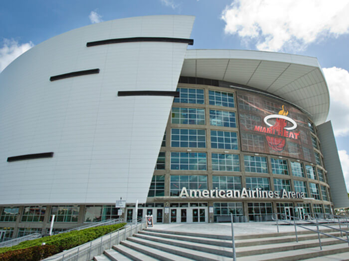

<!DOCTYPE html>
<html>
<head>
  <title>Leaflet Preview</title>
  <meta charset="utf-8" />
  <meta name="viewport" content="width=device-width, initial-scale=1.0">

  <link rel="stylesheet" href="https://unpkg.com/leaflet@1.5.1/dist/leaflet.css"
   integrity="sha512-xwE/Az9zrjBIphAcBb3F6JVqxf46+CDLwfLMHloNu6KEQCAWi6HcDUbeOfBIptF7tcCzusKFjFw2yuvEpDL9wQ=="
   crossorigin=""/>
  <script src="https://unpkg.com/leaflet@1.5.1/dist/leaflet.js"
   integrity="sha512-GffPMF3RvMeYyc1LWMHtK8EbPv0iNZ8/oTtHPx9/cc2ILxQ+u905qIwdpULaqDkyBKgOaB57QTMg7ztg8Jm2Og=="
   crossorigin=""></script>
  <style type="text/css">
    body {
       margin: 0;
       padding: 0;
    }
    html, body, #map{
       width: 100%;
       height: 100%;
    }
  </style>
</head>
<body>
  <div id="map"></div>
  <script>

      var map = L.map('map').setView([25.7725997265, -80.171114414], 14.0);

      var OSM = L.tileLayer('https://{s}.tile.openstreetmap.org/{z}/{x}/{y}.png', {}).addTo(map);

      var daPhoto = L.tileLayer('./tiles/{z}/{x}/{y}.png', {
        minZoom: 12,
        maxZoom: 16,
        tms: false,
        attribution: 'USGS'
      }).addTo(map);

      var aa_arena = L.icon({
        iconUrl: './data/ticket.png',
        iconSize: [50, 50],
        popupAnchor: [0,0]
      });

      var aa = "<strong>American Airlines Arena</strong><br/><br/>As you can see, between the historic photo and current map, the area where the arena lies has gone through signigicant changes. Not only has the waterway been filled in in order to support new infrastructure, but directly south of it there has been a new bridge and road-way have been constructed in order to grant passage to the cruise ship ports and terminals. Directly north of the arena has also been filled in for recreational space which now houses two meuseums. Just south of the new bridge, the docks have been built out to accommodate greater volumes of recreation, as well as converted into commercial space, known as Bayside Marketplace, where a Hard Rock Cafe has been established, as well as a number of other bars and resaturants. There is even a ferris wheel which can be taken to overlook the greater Downtown Miami/South Beach area.";

      var mark1 = L.marker([25.7814, -80.1870], {icon: aa_arena}).addTo(map)
      .bindPopup(aa)
      // .openPopup();

      var intercont = L.icon({
        iconUrl: './data/review.png',
        iconSize: [50, 50],
        popupAnchor: [0,0]
      });

      var inter = "<strong>InterContinental Miami</strong><br/><br/>Where the hotel now lies was previously a concrete parking lot with not much to offer. Now, the plot has been built up with one of the most famous hotels in Miami. The hotel's exterior displays an LED silouette performance of dancers who enter in a contest every year. The area north of the hotel, Bay Front Park, was expanded and went from a pretty average green, waterfront space with no more than one significant feature, to a completely built out and popular park which is home to many music events such as Ultra Music Festival, Rolling Loud Music Festival, and the 'Big Orange' New Years Celebration. In expanding the public realm using the park, there is now a band shell pavillion, multiple memorials and towers, a childrens playground, a large fountain, an amphitheater, and multiple bike and walking trails.";

      var mark2 = L.marker([25.7722, -80.1859], {icon: intercont}).addTo(map)
      .bindPopup(inter)
      // .openPopup();

      var clubspace = L.icon({
        iconUrl: './data/disco.png',
        iconSize: [50, 50],
        popupAnchor: [0,0]
      });

      var club = "<strong>CLUB SPACE</strong><br/><br/> In the direct vicinity of the night club, there has been infrastructural additions in a sort of 'building park' way to bolster night life acgtivities for adults. In the area surrounding the club, the most notable additions include the build out of I-95 into Downtown Miami, which has inspired a lot of growth in public recreation space, as well as the above ground metro line that circulates the downtown area for ease of access to the city. The metro rail parallels Biscayne Blvd on 2nd Ave, and has notable stops in places like Meuseum Park, the Adrinne Arsht Center (which houses a concert hall and performing arts center), Historic Overtown, Riverwalk, Brickell, the Financial District, Bayfront Park and so much more. The metro's addition has created an easy mode of public transportation for anyone to explore the city and not have to increase carbon footprint or waste time searching for parking on the busy streets. ";

      var mark3 = L.marker([25.7847, -80.1930], {icon: clubspace}).addTo(map)
      .bindPopup(club)
      // .openPopup();


    var daTiles = {
      "Open Street Map": OSM,
      "Miami Photo": daPhoto
    }

    var daMarkers = {
      "AmericanAirlines Arena": mark1,
      "InterContinental Miami": mark2,
      "CLUB SPACE": mark3
    }

    L.control.layers(daTiles, daMarkers).addTo(map);

  </script>
</body>
</html>

 <!-- what i have left is the change descriptions and figuring out how to get the arial photo up -->